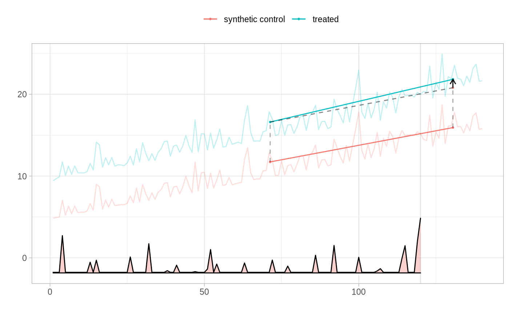

synthdid.Rmdn_0 <- 100 n_1 <- 10 T_0 <- 120 T_1 <- 20 n <- n_0 + n_1 T <- T_0 + T_1 tau <- 1 sigma <- .5 rank <- 2 rho <- 0.7 var <- outer(1:T, 1:T, FUN=function(x, y) rho^(abs(x-y))) W <- (1:n > n_0) %*% t(1:T > T_0) U <- matrix(rpois(rank * n, sqrt(1:n) / sqrt(n)), n, rank) V <- matrix(rpois(rank * T, sqrt(1:T) / sqrt(T)), T, rank) alpha <- outer(10*(1:n)/n, rep(1,T)) beta <- outer(rep(1,n), 10*(1:T)/T) mu <- U %*% t(V) + alpha + beta error <- rmvnorm(n, sigma = var, method = "chol") Y <- mu + tau * W + sigma * error rownames(Y) = 1:n colnames(Y) = 1:T tau.hat = synthdid_estimate(Y,n_0,T_0) se = synthdid_se(tau.hat) print(paste("true tau:", tau)) #> [1] "true tau: 1" print(paste0("point estimate: ", round(tau.hat, 2))) #> [1] "point estimate: 1.03" print(paste0("95% CI for tau: (", round(tau.hat - 1.96 * se, 2), ", ", round(tau.hat + 1.96 * se, 2), ")")) #> [1] "95% CI for tau: (0.94, 1.12)" plot(tau.hat) #> Warning: Ignoring unknown aesthetics: frame #> Warning: Ignoring unknown aesthetics: frame #> Warning: Ignoring unknown aesthetics: frame #> Warning: Ignoring unknown aesthetics: frame #> Warning: Ignoring unknown aesthetics: frame #> Warning: Ignoring unknown aesthetics: frame
